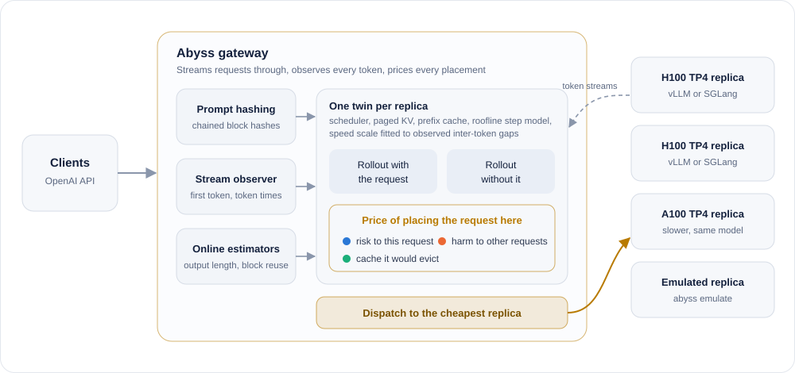
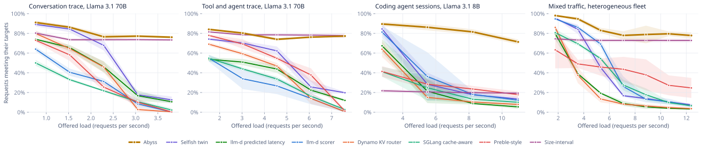
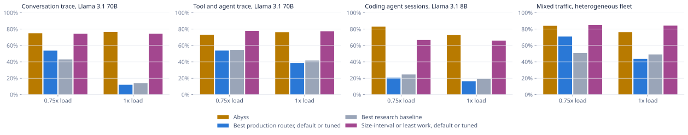
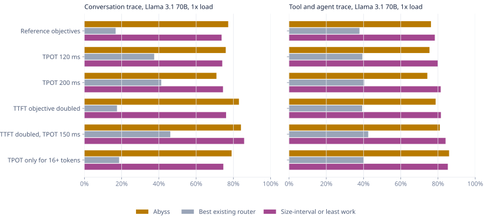
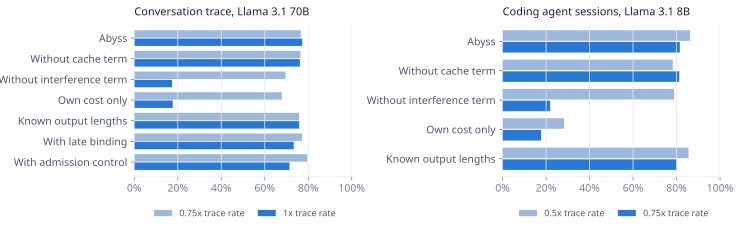
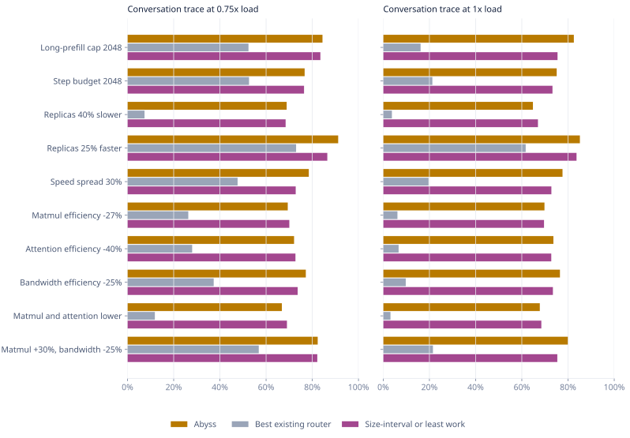
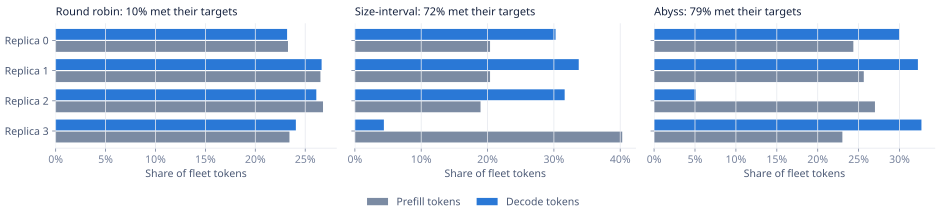
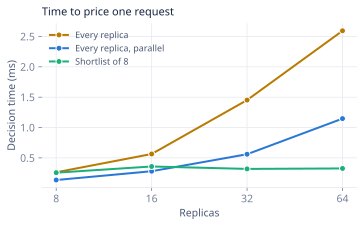
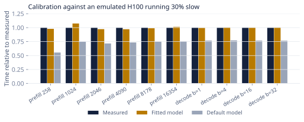

Routers in front of LLM inference fleets decide which replica serves each request. Production routers such as the llm-d scheduler, the NVIDIA Dynamo KV router and the SGLang router, and recent predicted-latency schedulers, score each candidate replica from the incoming request's point of view: how much of its prompt is cached there, how long the queue is, or how fast its own first token will arrive. They ignore what the placement costs everyone else, chiefly the stall a long prefill imposes on decode streams already running on the replica, and the value of the cached prefixes it evicts. We present Abyss, a router that prices these externalities for every request. Abyss keeps a twin of each replica's scheduler, paged KV memory and prefix cache, synchronized and speed-calibrated from the token streams the router already proxies, and charges each candidate placement the request's own probability of missing its latency objectives, plus the change in the miss probabilities of co-located requests estimated from two counterfactual rollouts, plus the expected cost of rebuilding evicted cache blocks. In a simulator that replays public production traces from the Kimi service and synthetic agent workloads, with baseline parameters tuned on held-out trace windows, Abyss meets both latency objectives for 73% to 76% of requests at the reference load, against 14% to 49% for the best existing router. Near capacity, a size-interval heuristic that sends every prompt above a tuned length cutoff to dedicated replicas is the strongest alternative and meets more objectives than Abyss on the tool and agent trace and the mixed-GPU fleet, by giving up on nearly all long prompts; Abyss is ahead of it on the conversation trace and the coding agent sessions and leads on token-weighted attainment on three of four workloads. With spare capacity the fixed cutoff is a handicap, and at 0.25x load Abyss reaches 84% to 98% against 22% to 82% for the heuristic with default parameters. The margins depend on the latency objectives, and when the replica model errs in ways a single speed factor cannot absorb, Abyss's attainment on the conversation trace falls from 77% to as low as 68%. All results are from simulation; we release the gateway, the simulator and a calibration tool so they can be checked on GPUs.
An LLM serving fleet runs many replicas of a model, each with continuous batching [1], chunked prefill [3] and a prefix cache that lets requests sharing a prompt prefix skip recomputation [2, 1]. A router in front of the replicas assigns each request to one of them. The choice matters: a request routed to a replica that already holds its prefix starts faster, and a request routed to a busy replica waits.
Routers in use today make this choice from the incoming request's perspective. The llm-d scheduler combines a prefix-match score with queue length and KV utilization [15]; the Dynamo KV router minimizes a weighted sum of blocks to prefill and active blocks [16]; predicted-latency schedulers learn the request's own time to first token and per-token time on each replica and pick the best fit [14, 11]. None of them charges a placement for what it does to the requests already on the replica.
Those costs are large in LLM serving. With chunked prefill, a step that carries a long prompt takes as long as the prompt's compute, and every decode stream in the batch waits. A new request's KV blocks evict cached prefixes that other requests were about to reuse. In the language of congestion games, routing each request to its own best replica is selfish routing, and selfish routing can be far from the best outcome for the system [21]. The classical remedy is marginal-cost pricing [19, 20]: charge each user the delay it imposes on others. A much older remedy for the same interference is to separate jobs by size [22], and we evaluate it alongside.
Abyss applies marginal-cost pricing per request. Its contributions are:
Serving engines. Engines such as vLLM [1] and SGLang [2] run each replica as an iteration-level scheduler. Each step processes a token budget shared by running decodes and chunks of waiting prompts [3]. KV memory is paged, and full blocks of computed prompt are kept in a prefix cache with least-recently-used eviction, optionally backed by host memory [6]. Disaggregated systems separate prefill and decode onto different replicas to avoid interference [4, 5]; Abyss targets the common colocated case.
Routers. Besides the production routers above, research systems balance prefix affinity against load [8, 9, 10], predict per-request latency or output length [12, 11, 14], or migrate requests after placement [7]. A recent study models disaggregated serving as a set of games and switches globally between cache affinity and load balancing near saturation [13]. Abyss differs in pricing each placement's externality explicitly, per request and per replica.
An example. Two replicas of Llama 3.1 70B on four H100s each. Replica 0 holds half of an incoming 30,920-token prompt in its prefix cache and is decoding 48 streams with a 24 ms per-token objective; replica 1 is idle. Abyss's twin predicts 2.05 s to first token on replica 0 and 2.78 s on replica 1, and the request's own miss probability is lower on replica 0, so a selfish router picks it. Prefilling the remaining 15,560 tokens there pushes an estimated 20.4 of the 48 streams past their objective, so Abyss places the request on replica 1. The case is a unit test in the repository.
Request j has a time-to-first-token objective Tj and a time-per-output-token objective Pj. Let Mj = 1 if it misses either, including abandonment. The router minimizes the expected weighted number of misses, E[Σj wj Mj], which maximizes goodput. When request q arrives, the own-cost rule places it on the replica minimizing E[Mq]. The marginal-cost rule minimizes
where sr is replica r's state and Kr(q) the expected future cost of the cache entries q evicts. This is the one-step greedy policy for the fleet objective. In nonatomic routing with convex costs, marginal-cost tolls make the selfish equilibrium optimal [20], and for affine latencies selfish routing is within a factor of 4/3 of optimal [21]. LLM routing has atomic requests, non-stationary state and deadline objectives, so these guarantees do not transfer; Abyss uses the principle as a design rule and is evaluated empirically.

Engine model. The twin is a step-level model of a vLLM V1 engine: a per-step token budget, running requests first, chunked prefill, admission of waiting requests in arrival order when their first chunk fits, paged memory in 16-token pages, a prefix cache keyed by chained block hashes with least-recently-used eviction and deepest-block-first release, an optional host tier with transfer cost, and recompute preemption from the tail of the running list. The same code serves as the simulator's ground-truth replica, the router's twin and the rollout fork. This keeps rollouts consistent with the twin, but it also means the twin is structurally exact in our simulations; Section 6.5 adds model errors.
Step time. A roofline model [26] gives each step's time from its composition: linear-layer and attention FLOPs against tensor-parallel compute, weight and KV bytes against HBM bandwidth, all-reduce traffic over the GPU interconnect, and fixed per-step and per-sequence overheads. Efficiencies default to 62% of peak for matrix multiplies, 42% for attention and 80% of memory bandwidth. A calibration tool replaces these defaults with values fitted to measurements of a real server.
Synchronization and calibration. The gateway observes each request's first token, every streamed token and completion. Before each decision every twin advances its clock and reconciles with those observations: requests with a first token are moved to decode, token counts are updated, finished requests are removed, and requests the twin wrongly thinks have started decoding are held one token short of prefill. Two speed scales correct the model. A decode scale tracks the ratio of observed inter-token gaps to the decode part of the twin's simulated steps. A prefill scale tracks the ratio of each request's observed time to first token to the time the twin itself simulated for it, which, unlike the error of the rollout made at routing time, is not biased by the router's choice of the replica that looked best. Each twin also tracks the spread of its own TTFT and TPOT prediction errors, which sets the width of the lognormal error model that turns predictions into miss probabilities.
Pricing. For each candidate replica, Abyss forks the twin, injects the request with an expected output length equal to the mean residual life of recent completions, and steps until its first token and 24 steps beyond. A second fork without the request runs to the same time. The difference in each co-located request's first-token time or token count, plus the request's added per-step decode cost over its expected lifetime, is converted into a change in that request's miss probability given its deadline and progress. Cache blocks the request would evict are taken from the head of the twin's eviction list and valued by a reuse probability learned from per-block reuse gaps times their rebuild time. A small latency term breaks ties when all probabilities are near zero. The request goes to the cheapest replica. Per-request weights let operators protect a class of requests.
Scaling. Forks reuse buffers, hit lookups are memoized against a cache epoch, replicas are priced in parallel, and an optional shortlist prices only the replicas with the lowest estimated backlog plus the one with the longest cached prefix.
Abyss is written in Go with no third-party dependencies (8,226 lines of code and 923 lines of tests) and a TypeScript dashboard (2,423 lines). The gateway proxies OpenAI chat and completion requests, hashes 256-byte blocks of the rendered prompt as a tokenizer-free prefix identity, learns the backend's characters per token from reported usage, parses streamed events for token timing, probes backend health and optionally scrapes vLLM or SGLang gauges. An emulated server runs the engine model in real time behind the same API. abyss calibrate measures prefill latency at six prompt lengths and decode step time at four batch sizes on any OpenAI-compatible server and fits the efficiency parameters by Nelder-Mead.
Setup. Every policy runs in the same discrete-event simulator. Each replica's real step times differ from the model by a hidden per-replica bias of up to ±12% and per-step lognormal jitter (σ = 0.06). No policy knows output lengths. Clients abandon a request without a first token after max(30 s, 4 × its TTFT objective). A request meets its objectives if its TTFT is within a base plus an allowance per thousand prompt tokens and its mean TPOT is within a bound (Table 1). Loads are multiples of a reference rate: the trace's own arrival rate replayed on the fleet in Table 1, or the generator rate for synthetic workloads. The fleet sizes are our choice, and at the reference rate the existing routers already miss most objectives, so we also report the load each policy sustains at a fixed attainment. Each point averages three disjoint 20-minute trace windows or three generator seeds.
| Workload | Rate | Mean prompt | Reuse | Fleet | Objectives |
|---|---|---|---|---|---|
| Mooncake conversation trace, Llama 3.1 70B | 3.05 | 13,403 | 32% | 4 × H100 TP4 | 1.0 s + 0.15 s/k, 80 ms |
| Mooncake tool and agent trace, Llama 3.1 70B | 6.08 | 9,219 | 53% | 4 × H100 TP4 | 1.0 s + 0.15 s/k, 80 ms |
| Coding agent sessions, Llama 3.1 8B | 10.98 | 34,736 | 93% | 8 × H100 | 0.4 s + 0.03 s/k, 30 ms |
| Chat, agent and RAG mix, Qwen3 32B | 7.08 | 13,492 | 89% | 2 × H100 TP2, 2 × A100 TP2, 2 × L40S TP4 | 0.8 s + 0.08 s/k, 60 ms |
Workloads. Two are public traces from the Kimi service [6], which record arrival time, prompt and output length and the chained hashes of 512-token prompt blocks, preserving real prefix sharing. Two are synthetic: coding-agent sessions with shared 8k to 14k token tool prompts that grow by about 1.5k tokens per step, and a mix of chat, agent and retrieval traffic on a fleet of H100, A100 and L40S replicas.
Baselines. The llm-d scorer (prefix 3, queue 2, KV 2) and the Dynamo KV router (overlap weight 1) see the engines' exact cache contents. The SGLang cache-aware router uses its approximate tree and balance thresholds. Bounded-load consistent hashing [24, 25], least request and round robin are classical. The llm-d predicted-latency rule [14] (80% affinity gate, 1% exploration, 5 s affinity break, 80/20 headroom, best fit) uses Abyss's twin as its latency predictor. The Preble-style policy [8] exploits the longest match when it covers more than half the prompt and otherwise minimizes recent load plus prefill cost. The size-interval heuristic [22] sends prompts above a length cutoff to a pool of the replicas with the slowest prefill and all other prompts to the rest, and picks the replica with the least outstanding prefill work inside each pool; least work is the same rule without pools. We call the first eight the existing routers. The selfish twin is Abyss with only the request's own cost. All are reimplementations from public descriptions.
Tuning. For each workload we grid searched every parameterized baseline on one trace window (95 settings for llm-d, 80 for SGLang, 7 for Dynamo, 6 for bounded-load hashing and 60 for the size-interval cutoff and pool size) and evaluated all policies on the two windows the search never saw, taking per family the better of default and tuned on the held-out data, which favors the baselines.

| Workload | Abyss | Selfish twin | Best existing router | Size-interval or least work | By tokens |
|---|---|---|---|---|---|
| Mooncake conversation trace, Llama 3.1 70B | 76.4% | 16.2% | 14.0% (llm-d predicted latency) | 74.4% (Size-interval) | 58% / 38% |
| Mooncake tool and agent trace, Llama 3.1 70B | 76.3% | 21.9% | 41.7% (Preble-style) | 77.3% (Size-interval) | 62% / 54% |
| Coding agent sessions, Llama 3.1 8B | 72.6% | 13.7% | 19.0% (Preble-style) | 65.9% (Size-interval (40k cutoff, 1 long replica)) | 60% / 45% |
| Chat, agent and RAG mix, Qwen3 32B | 76.3% | 17.3% | 49.0% (Preble-style) | 84.2% (Size-interval (32k cutoff, 1 long replica)) | 35% / 43% |
Figure 2 shows attainment against load with default parameters and Table 2 the held-out comparison with tuned baselines at the reference rate. Against the best existing router on each workload, Abyss is ahead by 27 to 62 points at the reference rate. The strongest alternative is the size-interval heuristic, which sends every prompt above a length cutoff to dedicated replicas: Abyss is ahead by 2 points on the conversation trace, behind by 1 point on the tool and agent trace, ahead by 7 points on the coding agent sessions and behind by 8 points on the mixed-GPU fleet. The heuristic gives up on nearly every prompt above its cutoff; weighted by prompt tokens, Abyss is ahead of it on three of four workloads (the conversation trace, the tool and agent trace and the coding agent sessions). With spare capacity the fixed cutoff is a handicap. At 0.25× the reference rate Abyss meets both objectives for 84% to 98% of requests, the size-interval heuristic with default parameters for 22% to 82%, and the best other policy for 78% to 95%.

| Target | Workload | Abyss | Best other policy |
|---|---|---|---|
| 80% | Mooncake conversation trace, Llama 3.1 70B | 0.66× (2.02 req/s) | 0.57× (1.73 req/s) (Selfish twin) |
| 80% | Mooncake tool and agent trace, Llama 3.1 70B | 0.51× (3.11 req/s) | 0.38× (2.30 req/s) (Size-interval) |
| 80% | Coding agent sessions, Llama 3.1 8B | 0.79× (8.64 req/s) | 0.27× (2.97 req/s) (Selfish twin) |
| 80% | Chat, agent and RAG mix, Qwen3 32B | 0.90× (6.37 req/s) | 0.59× (4.18 req/s) (llm-d scorer) |
| 70% | Mooncake conversation trace, Llama 3.1 70B | 1.25× or more | 1.25× or more (Size-interval) |
| 70% | Mooncake tool and agent trace, Llama 3.1 70B | 1.25× or more | 1.25× or more (Size-interval) |
| 70% | Coding agent sessions, Llama 3.1 8B | 1× or more | 0.31× (3.45 req/s) (Selfish twin) |
| 70% | Chat, agent and RAG mix, Qwen3 32B | 1.75× or more | 1.75× or more (Size-interval) |
Attainment at a single load mixes up two questions: how much traffic a fleet can carry and how it degrades beyond that. Table 3 answers the first. Measured as the highest load at which at least 80% of requests meet both objectives, Abyss sustains 0.66× (2.02 req/s) against 0.57× (1.73 req/s) for the selfish twin on the conversation trace; 0.51× (3.11 req/s) against 0.38× (2.30 req/s) for the size-interval heuristic on the tool and agent trace; 0.79× (8.64 req/s) against 0.27× (2.97 req/s) for the selfish twin on the coding agent sessions; 0.90× (6.37 req/s) against 0.59× (4.18 req/s) for the llm-d scorer on the mixed-GPU fleet. Loads are multiples of the reference rate, interpolated between the tested levels.
The objectives decide how much a long prefill step costs. One step carrying an 8k-token chunk of Llama 3.1 70B takes about 0.6 s on four H100s, enough to push a response of a few tokens past an 80 ms mean TPOT on its own. We reran both production traces with looser TPOT and TTFT objectives and with the TPOT objective applied only to responses of at least 16 tokens (Figure 4); the size-interval column takes the best of five settings in hindsight. The comparison depends on the latency objectives. Across six variants of the objectives on the two production traces at the reference rate, Abyss's difference from the best existing router ranges from +30 to +65 points, and from the best size-interval setting from -7 to +7 points.

Removing the interference term reduces attainment on the conversation trace at the reference rate from 77.2% to 17.4%, and keeping only the request's own cost gives 17.7% (Figure 5). The cache term's effect is +8.0 points on the coding agent sessions at 0.5x load; +0.3 points on the coding agent sessions at 0.75x load; +1.1 points on the conversation trace at 1x load: it helps where prefix reuse is highest and is otherwise within noise. Giving the twin the true output length of every request changes attainment by at most 1.4 points. Gateway-side queueing gives 73.3% at the reference rate, and rejecting requests predicted to exceed twice their TTFT objective gives 71.4% while cutting p99 TTFT from 39.9 s to 12.6 s.

| Condition | Abyss 0.75x | Existing 0.75x | Heuristic 0.75x | Abyss 1x | Existing 1x | Heuristic 1x |
|---|---|---|---|---|---|---|
| vLLM long-prefill cap of 2048 tokens | 84.4% | 52.4% | 83.5% | 82.5% | 16.2% | 75.5% |
| Step budget of 2048 tokens instead of 8192 | 76.7% | 52.6% | 76.4% | 75.1% | 21.3% | 73.3% |
| Every replica 40% slower than modeled | 68.9% | 7.4% | 68.5% | 64.8% | 3.8% | 67.0% |
| Every replica 25% faster than modeled | 91.2% | 73.0% | 86.5% | 85.1% | 61.7% | 83.7% |
| Hidden per-replica speed spread of ±30% instead of ±12% | 78.5% | 47.7% | 72.8% | 77.6% | 19.6% | 72.8% |
| Matrix-multiply efficiency 27% below the model | 69.4% | 26.3% | 70.1% | 69.8% | 6.2% | 69.6% |
| Attention efficiency 40% below the model | 72.1% | 28.0% | 72.7% | 73.7% | 6.7% | 72.7% |
| Memory-bandwidth efficiency 25% below the model | 77.2% | 37.3% | 73.7% | 76.5% | 9.8% | 73.5% |
| Matrix-multiply and attention efficiency both below the model | 66.8% | 11.9% | 69.0% | 67.8% | 3.1% | 68.4% |
| Matrix multiplies 30% faster, memory bandwidth 25% slower | 82.3% | 56.8% | 82.2% | 80.2% | 21.5% | 75.4% |
Table 4 and Figure 6 rerun the conversation trace with vLLM's long-prefill cap, a smaller step budget, replicas uniformly slower or faster than Abyss's model, a wider spread of hidden per-replica speed, and five model errors that change the efficiency of matrix multiplies, attention or memory bandwidth on the real replicas only. Under the engine and uniform-speed conditions Abyss's attainment ranges from 64.8% to 91.2%. When every replica is 40% slower or 25% faster than modeled, the median error of Abyss's TTFT predictions stays between 12% and 14%, against 7% to 13% without a systematic error. Abyss's replica model is the same code as the simulated servers. When the servers' real prefill or decode speed departs from the model in ways a single speed factor cannot absorb, Abyss's attainment on the conversation trace at the reference rate ranges from 67.8% to 80.2% (77.2% with an exact model), its median TTFT prediction error stays between 13% and 15%, and its difference from the size-interval heuristic ranges from -1 to +5 points.

In the first window of the conversation trace at the reference rate, round robin gives every replica a share of decode tokens within 1% of its share of prefill tokens. Under Abyss one replica processes 27% of all prefill tokens but only 5% of decode tokens. No rule asks for this; it follows from pricing the stall a long prefill imposes on running decodes. The size-interval heuristic produces the split by rule: its long-prompt replica processes 40% of prefill tokens and 4% of decode tokens. The difference is that Abyss still places long prompts on the other replicas when they have room, while the heuristic never does, which costs the heuristic attainment at low load and on long prompts. (Figure 7). The behavior resembles prefill and decode disaggregation [4, 5] and size-interval task assignment [22], here arising from prices rather than rules.

Who pays. Abyss maximizes the count of requests meeting their objectives, so the most expensive requests gain least: prompts above 64k tokens (3% of the window) meet their objectives 4% of the time at the reference rate. The size-interval heuristic gives up on almost every prompt above its cutoff, which is why its token-weighted attainment trails its request count. Fairness-oriented scheduling [18] could be layered on through per-request weights.
Measured against the real first token of each request, the median relative error of Abyss's TTFT prediction ranges from 7% to 23% across workloads and loads, under hidden speed bias, jitter, unknown output lengths and unknown future arrivals.
Figure 8 shows the time to price one request, measured with Go's benchmark harness on AMD Ryzen 3 3250U with Radeon Graphics, a two-core laptop processor. Pricing every replica takes 0.26 ms at 8 replicas and 2.6 ms at 64; parallel pricing reduces the 64-replica case to 1.1 ms and the shortlist of 8 to 0.3 ms. The size-interval heuristic decides in microseconds.

| Replicas | Req/s | Abyss | Abyss k=8 | llm-d | Dynamo | Preble | Size-interval |
|---|---|---|---|---|---|---|---|
| 8 | 14.1 | 99.6% | 99.6% | 90.6% | 73.7% | 84.4% | 81.8% |
| 16 | 29.1 | 99.1% | 99.1% | 92.3% | 51.7% | 72.9% | 79.0% |
| 32 | 56.9 | 99.5% | 94.8% | 85.5% | 53.6% | 74.7% | 79.4% |
| 64 | 117.6 | 98.6% | 84.6% | 78.8% | 44.9% | 67.0% | 75.8% |
Pricing every replica keeps attainment between 98.6% and 99.6% from 8 to 64 replicas, while the best of llm-d, Dynamo, Preble-style and the size-interval heuristic goes from 90.6% to 78.8%. The shortlist of 8 reaches 99.6% at 8, 99.1% at 16, 94.8% at 32, 84.6% at 64 replicas: it matches full pricing on small fleets but loses quality on large ones, so at scale parallel pricing is the better way to bound decision time.
To check the calibration path, we ran abyss calibrate against an emulated H100 secretly configured to run 30% slower than its model. The default model's median timing error was 25%; after fitting it was 1.4% (maximum 7.5%, Figure 9). This verifies the measurement and fitting procedure. Because the emulator uses the same model family, it does not show that the model fits real GPUs, which remains to be measured.

Prefix-aware routing in production combines cache affinity with load signals [15, 16]. Preble balances prefix reuse against load with an exploit-or-explore rule and accounts for eviction cost [8]; DualMap maps prefixes to two candidate instances and chooses between them [9]; CacheRoute plans a periodic routing table that balances affinity against expected load [10]. Astrolabe and Lodestar use predicted or learned performance to guide dispatch [12, 11], and llm-d's predicted-latency scheduler picks the best-fitting replica by predicted headroom [14]. These systems optimize for the incoming request or for aggregate balance; Abyss prices the per-request externality on co-located requests. Llumnix migrates requests after placement [7], which is complementary. Disaggregation removes prefill and decode interference by construction [4, 5], at the cost of transferring KV state; Abyss reduces interference within colocated fleets. Vidur simulates single-replica serving for configuration search [17]; Abyss's simulator models fleets and routing. Load balancing theory offers power-of-two choices [23], bounded-load hashing [25] and size-based assignment [22], the last of which is a strong baseline here, and congestion games supply the marginal-cost principle [19, 20, 21]; a recent study applies price-of-anarchy analysis to disaggregated inference [13].
All headline results come from simulation. The engine and step-time models follow vLLM V1 and published accelerator specifications with assumed efficiencies and have not been validated against GPUs; the repository includes a procedure and scripts to run the same comparison on real vLLM servers. Abyss's twin and the simulated replicas share code, so structural differences between a twin and a real engine are not represented; the model-error experiments cover speed errors only. The size of Abyss's lead depends on the operating point and on the latency objectives, and at the reference rate the existing routers already miss most objectives. Baselines are reimplementations. The objective counts requests, which favors short ones. The gateway identifies prompts by bytes rather than tokens. Under overload Abyss concentrates misses on few requests, which hit the client abandonment limit. Decision cost grows with fleet size; the shortlist bounds it but loses attainment on large fleets, so parallel pricing is the practical option there.
Routing a request to the replica that is best for it alone ignores what the placement costs the requests already running there. Pricing that cost explicitly, using counterfactual rollouts of calibrated replica twins, meets latency objectives for more requests than the production and research routers we compared it with in simulation, with default and tuned parameters. A size-interval heuristic that isolates long prompts by rule matches or exceeds Abyss near capacity on two of four workloads, at the cost of the long prompts and of attainment at lower load. Much of the benefit therefore comes from keeping long prefills away from latency-sensitive traffic; what pricing adds is doing so adaptively, without a tuned cutoff, and serving long prompts when there is room. The next step is to confirm these results on GPU servers.